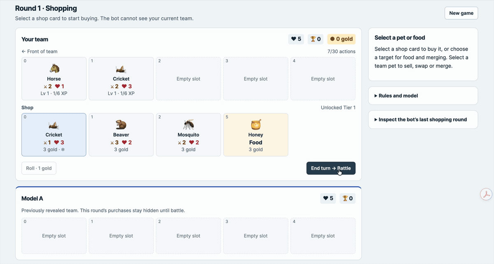
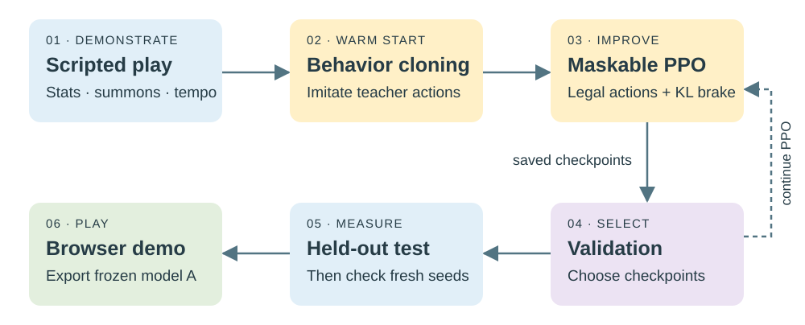
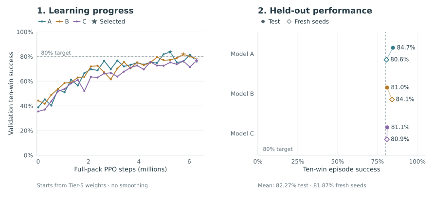

I wanted to understand reinforcement learning beyond the diagrams and make a fun project. I chose Super Auto Pets, an auto-battler where you buy, combine and arrange a team of animals, then watch them fight automatically. Despite the individual decisions looking simple, combinations, team builds, and pivoting between battles are nontrivial.
By the end, I had an unofficial 60-pet simulator and a bot I fail to beat. Along the way, I also had to overcome agents that swapped pets back and forth, repeatedly toggled shop freezes, or ended turns without buying anything. Those failures taught me more than a smooth training curve would have.
Building the Arena

The first challenge was the environment, not the network. I built a Python simulator wrapped in Gymnasium: the agent observes its team, shop, gold, lives and round, then chooses a shopping action. Combat resolves automatically. An episode ends at ten wins or zero lives, with a computational cap of 40 rounds.
I started with eight pets, then expanded tier by tier to all 60 ordinary Turtle Pack pets, 18 foods and seven battle tokens. Each expansion needed more than catalog entries: summons, copied abilities, food effects and level-up rewards interact through event ordering. I added rule tests and deterministic replays before training on new mechanics. The final release passed 1,039 Python tests, though self-consistency is not proof of official-client parity.
The sandbox freezes a v0.46-inspired ruleset. It also uses adjacent swaps and forces battle after 30 shopping actions—deliberate differences from the official game. For another pack, I would reuse the engine, training loop and evaluation tooling, implement and test new abilities, then retrain or fine-tune. The current species-specific input encoding means new pets are not automatically understood by the old checkpoint.
How We Trained
No foundation model was involved. The final actor and critic are separate two-layer, 64-unit Tanh networks: 341,516 parameters in total. A 2,531-feature observation feeds a policy over 139 discrete actions. The actor chooses moves; the critic estimates future return, not win probability.
Imitate first, then improve
Random exploration sometimes learned to do almost nothing. Behavior cloning (BC) gave it a better starting point: three scripted teachers demonstrated stat-building, summoning and tempo-oriented play. In the initial BC experiment, 1,800 episodes produced 124,809 action labels; 300 separate episodes were held out. Twenty epochs of cross-entropy training taught the actor to predict teacher actions. The critic was not trained during BC.
These teachers were useful, not optimal: they never froze shops, and their demonstrations included losses. PPO then learned from the agent’s own play, using a clipped policy objective plus a value-prediction loss. There was no continuing imitation loss. BC made early learning faster across the three tested seeds, but did not establish a universally better final policy.
Maskable PPO excludes illegal actions before sampling—for example, buying without enough gold. It does not exclude legal but pointless swaps. A target KL of 0.01 adds a separate brake: stop further updates on a rollout batch when the approximate policy change becomes too large. This compares the updated policy with the rollout policy, not with the teacher.

Reward and compute
The final reward was intentionally small and explicit:
reward = battle outcome − 0.005 per actionBattle win: +1 · loss: −1 · draw or no battle: 0
There was no extra ten-win bonus or direct punishment for unspent gold. With discount factor γ = 1, the action cost encourages efficiency, while battle results provide the main learning signal.
Each rollout collected 2,048 decisions (eight environments × 256 steps), followed by up to ten PPO epochs with batch size 256, learning rate 3e−4 and clip range 0.2. The final candidates inherited Tier-5 weights and each received 6.29 million full-pack PPO steps. Three candidates plus seven opponent generators totaled 26.21 million PPO steps. Full-pack preparation through the first passing test took about two hours on local CPU, with at most two single-threaded training workers; this excludes earlier curricula and the final confirmation. Small networks and direct state simulation made a GPU unnecessary for this stage.
Interesting Observations
A cheaper loss can look attractive
A per-action penalty has a catch: useful purchases also cost reward. In an early three-seed comparison, switching to swap-only penalties eliminated no-purchase failures in two runs. But freezing loops remained, and none of those six final models reached ten wins against the learned test opponents. Fixing one behavior was not the same as learning a strong strategy.
A penalty is not a guarantee
The replay viewer exposed a failure with 182 swaps in 247 actions. The penalty really was being applied. Other policies repeatedly froze and unfroze items; punishing swaps alone did not address that. I inspected action probabilities, rewards and value estimates rather than assuming every loop was a missing reward term.
More training can undo good behavior
BC-started policies could still deteriorate under PPO. In a matched continuation experiment, adding the KL brake raised mean ten-win success from 61.08% to 69.50%, while episodes requiring forced battle fell from 7.63% to 0.10%. These were earlier, smaller-sandbox results—not directly comparable with the final score. They justified retaining conservative updates and validation-based checkpoint selection, not claiming that instability was solved forever.
Results and Conclusion
Training, validation and test used separate learned-opponent pools: saved teams generated by independently trained policies, sampled for battles. These provided stronger opposition than simple scripts without a live second agent learning simultaneously. I chose checkpoints using validation only, then evaluated the fixed models against the held-out learned pools.

The three models averaged 82.27% ten-win success on the held-out test and 81.87% in the fresh-seed confirmation (3,000 episodes each). The confirmation changed episode seeds, not opponent policies. These are ten-win run completion rates, not individual battle win rates or official Arena results. Frozen opponents limit what we can claim about generalization; passing 80% also does not prove convergence.
The demo runs model A inside your browser using Pyodide and NumPy, with emoji instead of official game artwork. Its action choices matched the original Torch policy on 1,200 tested states. Human-versus-bot play is a separate head-to-head format, not the benchmark above, and the bot does not learn from your games.
I really had fun training this small agent, and I look forward to expanding it to other pet packs in the future. A huge thank you to the team behind Super Auto Pets for creating such an amazing game that inspired this project. If you’re a player, challenge yourself and try playing against the bot!